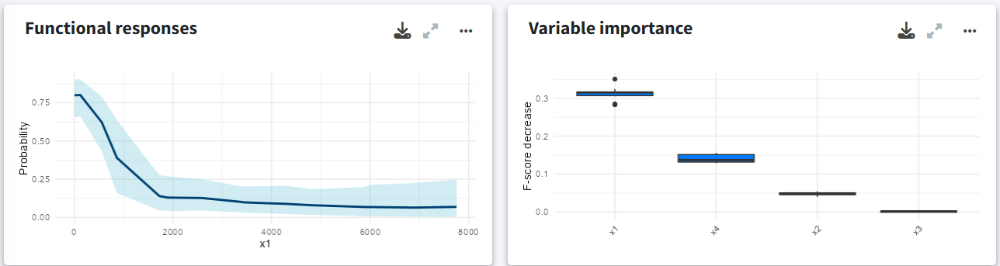

Get started
Welcome to GLOSSA
GLOSSA (Global Ocean Species Spatio-temporal Analysis) is an open-source R package and shiny application for fitting marine species distribution models (SDMs) using Bayesian Additive Regression Trees (BART) with species occurrences and environmental data. It makes SDM analysis more accessible through a user-friendly interface, with reproducible and exportable outputs.
Species distribution modeling involves more than just fitting an algorithm, it includes selecting appropriate predictors, checking data quality, mitigating biases, understanding species ecology, and interpreting results with care. While GLOSSA is not designed to handle the entire SDM pipeline, it supports several key steps and makes them accessible.
To support good modeling practices, we include links at the end of this guide to established references and recommended guidelines for SDM, particularly in marine contexts.
How GLOSSA works
GLOSSA implements a streamlined modeling pipeline, from data upload to posterior prediction and uncertainty quantification.
1. Data upload
You can upload:
- Species occurrences: Tab-separated file(s) with presence/(pseudo-)absence records containing latitude, longitude, and a column indicating presence (1) or absence (0). Timestamp is optional but required for time-varying predictors. If you only have presence data, GLOSSA can generate pseudo-absences. In addition, you can also upload multiple files to analyze them independently within the same session
- Environmental data: A ZIP file of raster files representing gridded predictor variables. Occurrence points will be matched in space and time to extract raster values.
- Projections (optional): Raster ZIPs used to project the model beyond the fitting data. These can represent future time periods or climate scenarios.
- Study area (optional): A polygon file to define the study region and modeling extent. If not included, GLOSSA will use the extent of the environmental layers.
2. Data processing
- Occurrence processing: GLOSSA automatically removes duplicate records, filters out invalid points, and applies optional spatial thinning.
- Environmental data processing: Raster layers are harmonized in resolution and extent, then cropped and masked to the study area. Predictor values at occurrence locations are extracted and can optionally be standardized (z-score).
- Generate pseudo-absences (if needed): If no absences or pseudo-absences were uploaded before, GLOSSA supports random background, target-group, spatial buffer, or environmentally constrained strategies for sampling pseudo-absences.
3. Model fitting, evaluation, and prediction
The core modeling approach used in GLOSSA is BART:
- Fit BART model: You can choose between two model types, a suitable habitat model (uses only environmental predictors) or a native range model (aso includes spatial coordinates as covariates). GLOSSA uses BART to fit the model and estimate uncertainty.
- Model evaluation: GLOSSA estimates a threshold to turn probability into binary presence/absence and generates a model summary including summary metrics and diagnostic plots. You can also run cross-validation, including random k-fold, spatial block, and temporal splits.
- Model output: Outputs include posterior point and interval estimates of predictions, binary maps, functional response curves, and variable importance scores.
- Projections: Use the fitted model to project under new environmental conditions.
4. Visualization and export
After the analysis, GLOSSA provides interactive maps and charts to explore results. You can export all outputs as a ZIP file and a configuration file for reproducibility.
Install and launch the application
GLOSSA is available on CRAN and GitHub. To install GLOSSA, simply run the following command in your R console:
install.packages("glossa")Alternatively, you can install the latest development version from GitHub to get the latest updates and fixes:
# install.packages("devtools")
devtools::install_github("iMARES-group/glossa")After installation, you can launch the GLOSSA app by running this command:
library(glossa)
run_glossa()For more details, see the Installation guide
Run a toy example
This section is a hands-on introduction to GLOSSA using a toy example. Without going into every detail, you’ll run your first model to get familiar with the interface and build confidence to explore the full documentation and run your own analysis.
Once you’ve downloaded the data, launch the GLOSSA app:
library(glossa)
run_glossa()This will open the app in your web browser directly in the Home tab. Here, you can start a new analysis, explore a demo, or access tutorials.
Use the question mark icon in the top-right corner to display a brief explanation of what each tab and button does.
New analysis tab
To run your first analysis, go to the New Analysis tab. Here, you’ll upload input files and select the analysis options
- Data upload: The first panel is where you upload your data and configure the analysis settings.
- Previsualization: The second panel provides an interactive map to preview your input data.
- Predictor variables: Choose predictor variables for each uploaded species.
- Uploaded files: A table indicates if your input files are formatted correctly.
Required files for analysis
GLOSSA can function with just occurrence data and environmental variables, but additional options are available. Let’s briefly go through the necessary files:
- Occurrences: Upload a tab-separated file (e.g.
.tsv) with four columns indicating the occurrence location, whether it is a presence or absence, and the time it was recorded. The columns must be named exactly as follows:decimalLongitude,decimalLatitude,pa, andtimestamp. If thepacolumn is missing, GLOSSA will assume all records are presences. Iftimestampis missing, GLOSSA will assume all records occurred at the same time. GLOSSA also supports presence-only data by generating pseudo-absences during preprocessing.
For example, the sp1.txt file looks like this:
> head(sp1)
decimalLongitude decimalLatitude timestamp pa
1 5.42909 43.20937 1 1
2 -43.05 49.03 1 0
3 -2.52369 47.29234 2 1
4 34.054 -26.913 2 1
5 -41.63 46.3 2 0
6 -174.5 27.5 3 1- Environmental data: Upload a
.ziparchive containing environmental data as raster files (e.g.,.tifor.ncformat) with a specific structure. The ZIP file should contain a subdirectory for each environmental variable, with files sorted by time period. For example, if you have two variables (x1andx2) and your observations are from two different years, your ZIP file should look like this:
fit_layers.zip
├───x1
│ x1_1.tif
│ x1_2.tif
└───x2
x2_1.tif
x2_2.tifEnsure that all layers have the same resolution, the same number of layers, and that they match the number of years in your occurrence files. If you want to use the same layer for all observations, include just one file in the subdirectory and set all timestamp values to 1 or remove the timestamp column.
Projection layers (optional): If you want to make predictions, upload your projection data here. This file has the same format as the environmental data file, and the subdirectories must match those used for fitting the model. You can upload multiple ZIP files if you want to predict multiple scenarios (e.g., different temperature increase scenarios).
Study area (optional): If your rasters cover a larger area than your study region, you can provide a polygon to delimit your study area (e.g., GPKG, KML or GeoJSON). This will remove points outside the polygon and mask the environmental variables accordingly.
Once all files are uploaded and validated, a checkmark will appear next to each file in the summary table (bottom-right panel). If any checks fail, refer to the documentation.
Analysis options
In this section, you need to select the desired output. GLOSSA fits two kinds of models:
- Native range: The model includes environmental predictor variables and uses longitude and latitude coordinates as a spatial smoother.
- Suitable habitat: The model only includes the environmental variables.
You can choose to fit the model under the Model fitting option. This option will fit the model and generate a prediction map on an averaged environmental scenario calculated as the mean of the fitting period. If you’ve uploaded projection layers and want to make predictions using the fitted model, select the Model projection option.
When fitting the model, if multiple years or time periods are uploaded, GLOSSA will extract the value of the corresponding environmental layer for each occurrence based on the specific time stamp.
Additionally, you can check the Functional responses checkbox if you want to compute the response curves (i.e., the relationship between the occurrence of a species and each environmental variable) and Variable importance to compute the contribution of each predictor. You can also enable Cross-validation to assess predictive performance using random k-folds, spatial blocks or temporal splits.
Advanced options
By selecting the Advanced options button, a sidebar will appear with extra options for refining your analysis:
Occurrences thinning. Apply spatial thinning to your occurrence data using a distance threshold, a regular grid with specific grid cell size, or the number of decimal places to round coordinates. GLOSSA currently implements this method via the GeoThinneR R package. If you need to apply a different thinning strategy (e.g. environmental thinning) or other preprocessing, you can do so before uploading your data to GLOSSA.
Pseudo-absences generation. The user can choose the ratio of pseudo-absences to generate and between four commonly used strategies: random background, target-group, buffer-restricted, and environmentally constrained.
Standardize covariates. GLOSSA uses a scaling method that subtracts the mean and divides by the standard deviation for standardization. The mean and standard deviation are calculated from the fitting layers, and the same values are used to standardize the projection layers, ensuring consistency across variables.
Enlarge polygon: If your polygon has low resolution, you can apply a buffer in degrees to expand it. This is useful if you have points near the coast that fall outside the polygon due to poor resolution. You can preview the buffer using the “
play” preview icon before running the analysis to find the optimal value.Model: Choose the model to apply and some tuning parameters such as the number of trees of BART or the shrinkage prior parameter to control overfitting. Currently, GLOSSA only supports the BART model.
Set a seed: Specify a seed for reproducibility of your results.
Predictor variables
If you uploaded multiple species, you can assign different predictor variables to each one using the panel at the bottom-left.
Uploaded files
In the table in the bottom right corner, ensure that all files are checked and that you’ve selected your analysis options.
Once everything is set, you’re ready to run the analysis. Click the Run Job button, confirm in the dialog, and wait for the analysis to complete.
Analysis results
Once the analysis is complete, you will be redirected to the Reports tab, where you can explore all the results and export visualizations  .
.
In the top left corner of the tab, you can select the species for which you want to view the results. The first row displays key metrics:
- Potential suitable area: Calculated in square kilometers, based on the predicted presence-absence grid cells.
- Mean suitable probability: The average probability of suitable habitat across the entire prediction area.
- Presences/Absences: The number of presence and absence points used to fit the model after all processing and cleaning.
If multiple projection layers are provided (for example, a time series), a sparkline plot will display the values for each time period, and the text value shown will represent the last one in the time series.
GLOSSA predictions
The first plot, titled GLOSSA predictions, shows the presence probability predictions within the study area. As we are working in the Bayesian framework, each grid cell has associated one predictive posterior distribution, therefore we can obtain a more comprenhensive undertanding of the predictions and estimated uncertainty by exploring metrics like the mean, median or quantiles. Using the three-dot icon  , you can open the sidebar to customize the display:
, you can open the sidebar to customize the display:
- Choose between predictions on the fitting layers or the projection layers.
- Toggle between viewing the native range or the suitable habitat.
- Select which value from the posterior distribution to display (e.g., mean probability, median, etc.).
Environmental variables and occurrence validation
The plot on the right shows the environmental variables used to fit the model, allowing you to quickly compare them with the probability projections. Below this, another plot displays the occurrence points that were retained or filtered out during the analysis.

Functional responses and variable importance
Below, you can explore the relationship and importance of each predictor variable:
- Functional responses: Partial dependence plots showing how each environmental predictor influences predicted suitability.
- Variable importance: Displays the importance of each variable measuring the change in the prediction error using a permutation-based approach.

Cross-validation
In the cross-validation panel you can see the mean and median values for different performance metrics, including metrics tailored for models without real absences such as the Continuous Boyce Index, and the occurrence record grouped by folds.
Model summary
Apart from the cross-validation, the final section summarizes the fitted model with a ROC curve with performance metrics of the fitted model, a confusion matrix, and the distribution of predicted values.
Exports
In the Exports tab, you can export the results of your analysis. This includes all projection maps, the data used to fit the model, variable importance metrics, cross-validation results, etc. You can export almost everything, enabling you to explore the results further or create your own visualizations for your work! Additionally, A .json file is also generated saving the inputs and analysis settings used.
Next steps
Now that you’ve successfully run a toy example following this Quick start guide, you can continue with the full documentation. You’ll find information on how to:
- Prepare your data
- Generate pseudo-absences
- Running a new analysis
- Understanding BART
- Explore the results
- Export the results
- Tutorials and examples
- Function reference
Need more help?
Visit the FAQs tab, or if you still need help, you can reach us through the Contact Us tab.
Thank you for using GLOSSA, and enjoy your species distribution modeling!
Resources
Araújo, M. B., Anderson, R. P., Márcia Barbosa, A., Beale, C. M., Dormann, C. F., Early, R., … & Rahbek, C. (2019). Standards for distribution models in biodiversity assessments. Science advances, 5(1), eaat4858. https://doi.org/10.1126/sciadv.aat4858
Guisan, A., Thuiller, W., & Zimmermann, N. E. (2017). Habitat suitability and distribution models: with applications in R. Cambridge University Press. https://doi.org/10.1017/9781139028271
Kass, J. M., Smith, A. B., Warren, D. L., Vignali, S., Schmitt, S., Aiello‐Lammens, M. E., … & Zurell, D. (2025). Achieving higher standards in species distribution modeling by leveraging the diversity of available software. Ecography, 2025(2), e07346. https://doi.org/10.1111/ecog.07346
Melo-Merino, S. M., Reyes-Bonilla, H., & Lira-Noriega, A. (2020). Ecological niche models and species distribution models in marine environments: A literature review and spatial analysis of evidence. Ecological Modelling, 415, 108837. https://doi.org/10.1016/j.ecolmodel.2019.108837
Peterson, A. T., Aiello-Lammens, M., Amatulli, G., Anderson, R., Cobos, M., Diniz-Filho, J. A., … & Zurell, D. (2022). ENM2020: A free online course and set of resources on modeling Species’ niches and distributions. https://doi.org/10.17161/bi.v17i.15016
Peterson, A. T., Soberón, J., Pearson, R. G., Anderson, R. P., Martínez-Meyer, E., Nakamura, M., & Araújo, M. B. (2011). Ecological niches and geographic distributions. In Ecological niches and geographic distributions. Princeton University Press. https://doi.org/10.1515/9781400840670
Robinson, N. M., Nelson, W. A., Costello, M. J., Sutherland, J. E., & Lundquist, C. J. (2017). A systematic review of marine-based species distribution models (SDMs) with recommendations for best practice. Frontiers in Marine Science, 4, 421. https://doi.org/10.3389/fmars.2017.00421
Sánchez-Mercado, A. Y., Ferrer-Paris, J. R., & Franklin, J. (2010). Mapping species distributions: spatial inference and prediction. Oryx, 44(4), 615. https://doi.org/10.1017/S0030605310001201
Sillero, N., Arenas-Castro, S., Enriquez‐Urzelai, U., Vale, C. G., Sousa-Guedes, D., Martínez-Freiría, F., … & Barbosa, A. M. (2021). Want to model a species niche? A step-by-step guideline on correlative ecological niche modelling. Ecological Modelling, 456, 109671. https://doi.org/10.1016/j.ecolmodel.2021.109671
Zurell, D., Franklin, J., König, C., Bouchet, P. J., Dormann, C. F., Elith, J., … & Merow, C. (2020). A standard protocol for reporting species distribution models. Ecography, 43(9), 1261-1277. https://doi.org/10.1111/ecog.04960